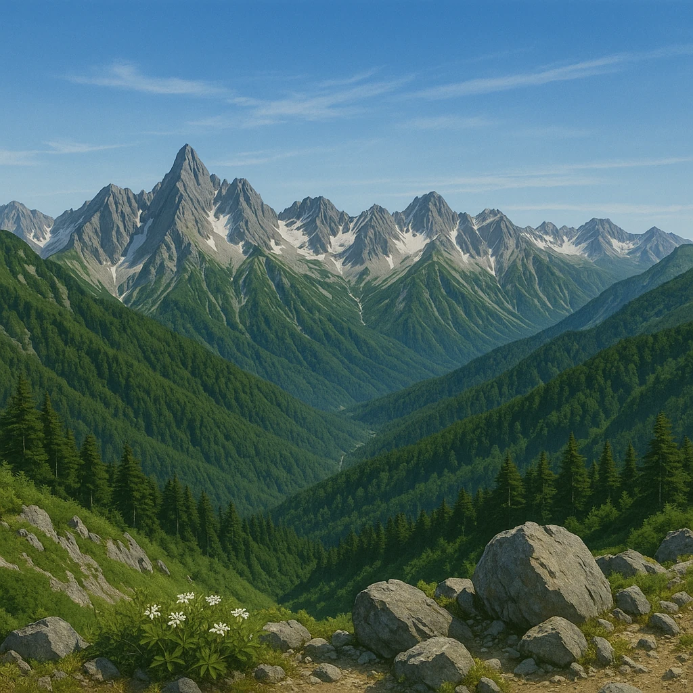

Ⅰ-2
日本アルプス
北から
飛驒 → 木曽 → 赤石
の順にならぶ
← 北（日本海側）
南（太平洋側）→
3000ｍ
北アルプス
中央アルプス
南アルプス

北アルプス
飛驒山脈
富山・長野・岐阜の境。立山・穂高岳
中央アルプス
木曽山脈
長野県の中央。木曽川の東側
南アルプス
赤石山脈
長野・山梨・静岡の境。北岳
覚え方
「
ひ・き・あ
」＝
飛
驒・
木
曽・
赤
石。北から南へこの順。3つまとめて
日本アルプス
。
第16章 中部地方
SEED EDUCATION